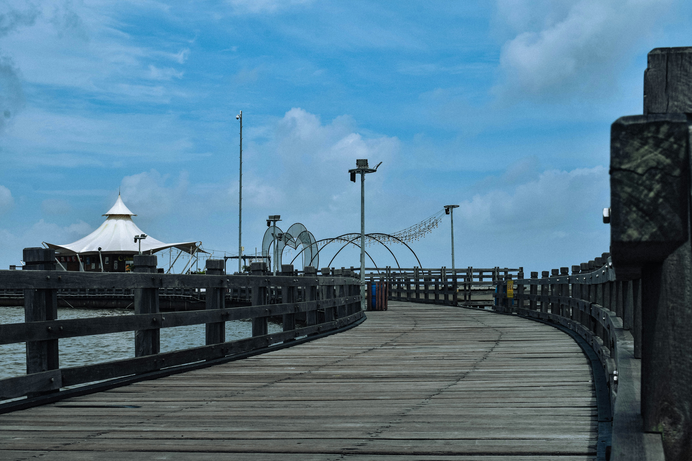
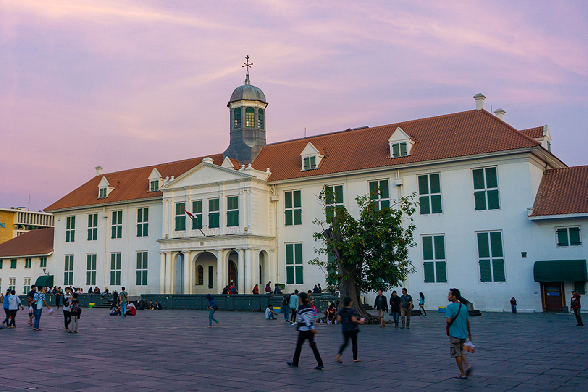
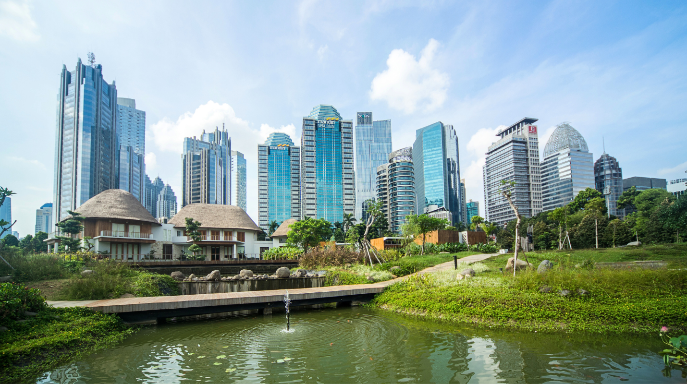
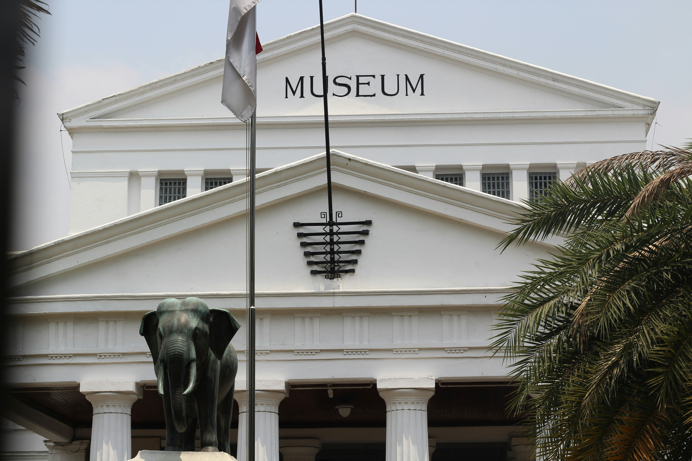

Berbagai kategori
Destinasi Wisata

Taman hiburan & rekreasi
Pilihan tempat wisata untuk bersenang-senang dan menikmati waktu bersama keluarga dan teman. Ancol merupakan kawasan wisata pantai yang populer dengan berbagai fasilitas seperti pantai, taman hiburan, akuarium, dan taman air.

Sejarah dan budaya
Berbagai tempat wisata untuk mempelajari sejarah dan budaya Indonesia.

Religi
Berbagai wisata religi yang dapat di kunjungi di Jakarta.

Alam & Taman
Berbagai tempat wisata untuk menikmati keindahan alam dan bersantai di tengah kota.

Seni & Kreatif
Menawarkan berbagai tempat wisata untuk menikmati seni dan budaya.